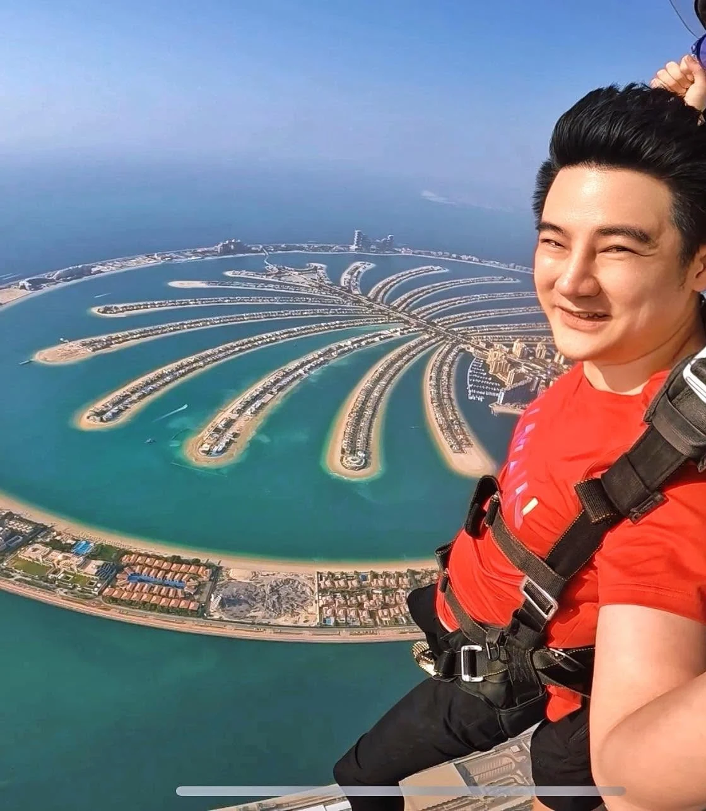
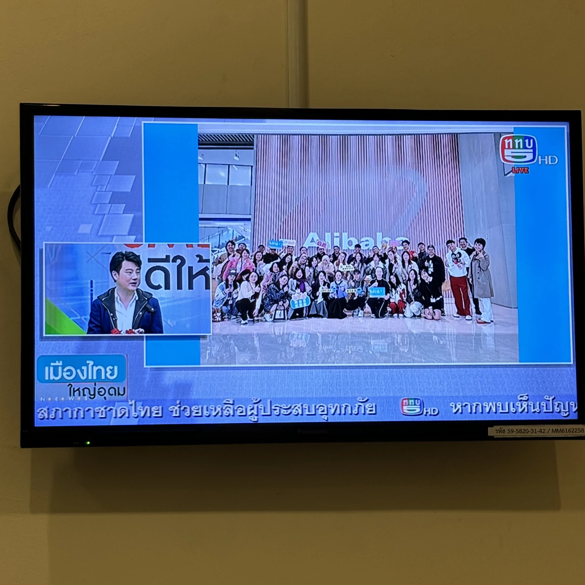
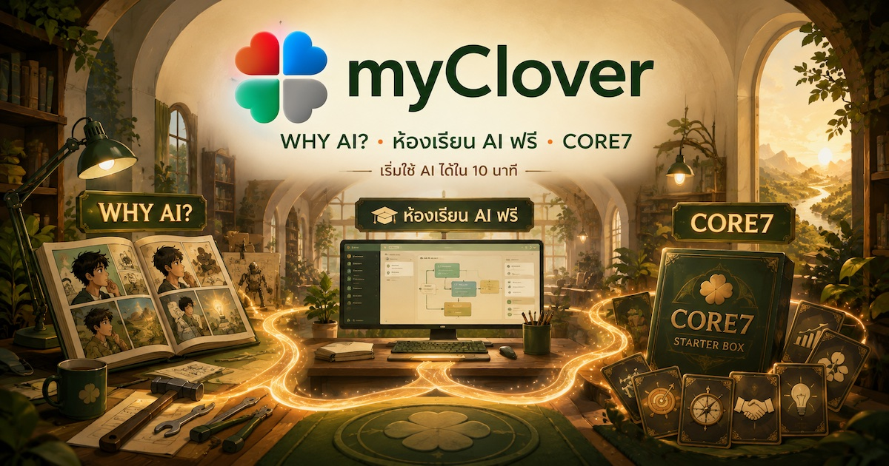
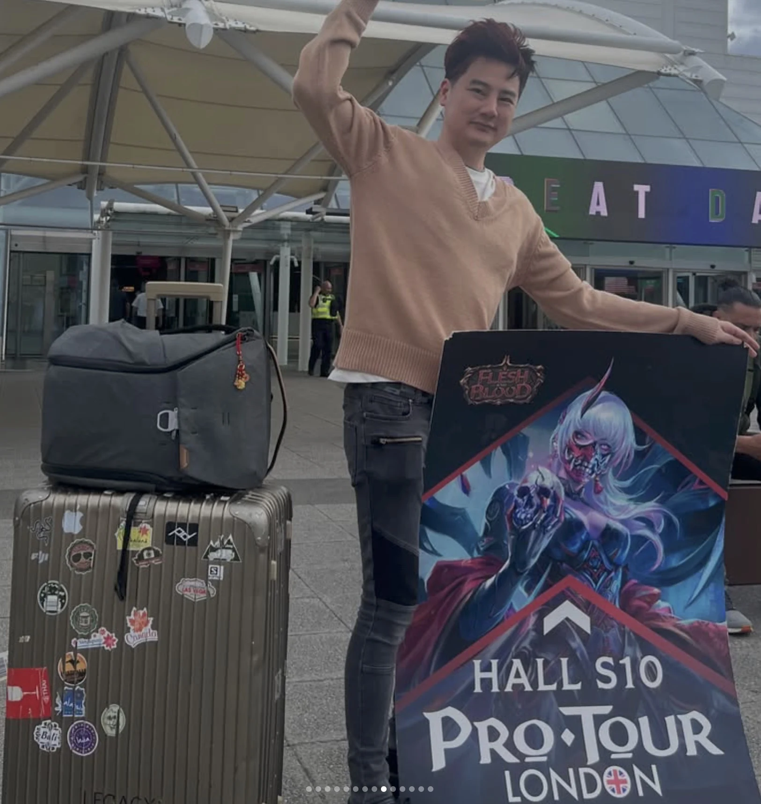
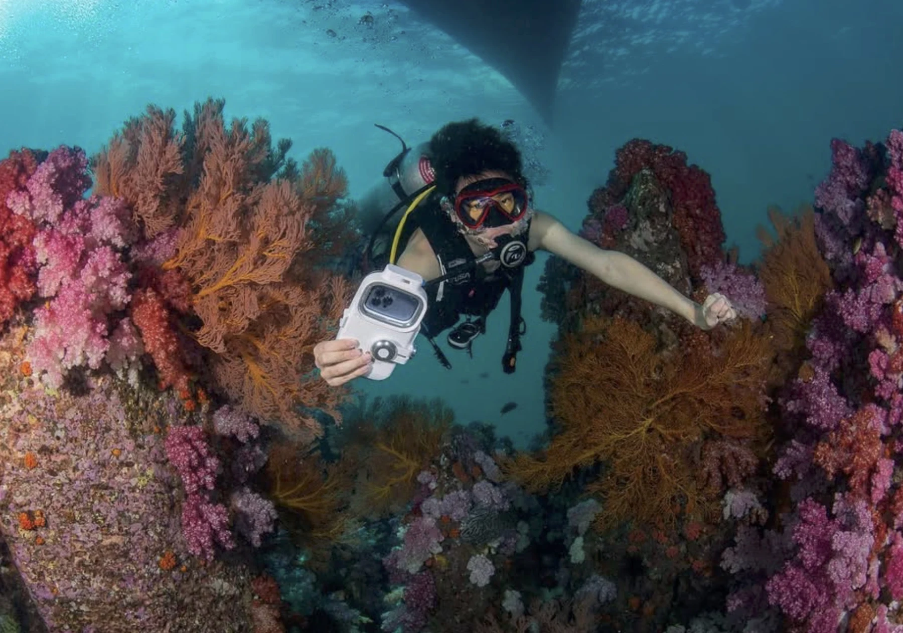
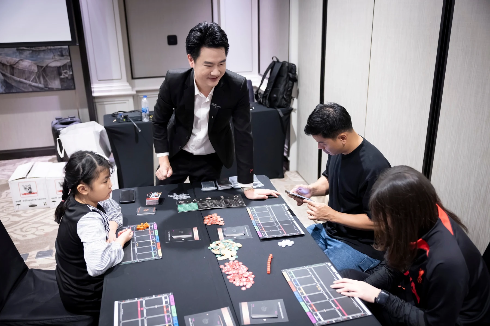

PUBLIC SPEAKING · LARGE AUDIENCE
พูดต่อหน้าคนหลักหมื่น
ประสบการณ์นี้สอนว่าความชัดเจนสำคัญกว่าคำที่ดูเก่ง และข้อความที่ดีต้องพาคนจำนวนมากเห็นภาพเดียวกันได้
ผมช่วยคนที่มีความรู้และความคิดดีอยู่แล้ว ให้เสียงของเขาไปได้ไกลขึ้น — ด้วยการจัดความคิดให้เป็นระบบ แล้วเปลี่ยนมันเป็นเกม บทเรียน เครื่องมือ และประสบการณ์ที่คนอื่นหยิบไปใช้ต่อได้จริง
ผมผ่านงาน Brand, Training, Technology, General Management และธุรกิจของตัวเอง เส้นทางไม่ตรง แต่กลับมาที่โจทย์เดิมเสมอ: ทำอย่างไรให้ความรู้ไม่หยุดอยู่ที่คนเก่งเพียงคนเดียว
สิ่งที่ผมสนใจไม่ใช่แค่การพูดดัง แต่คือการทำให้ข้อความเดินทางไปถึงคนจำนวนมากโดยยังไม่เสียแก่น
นอกเวลางาน ผมชอบเข้าไปอยู่ในสนามที่ยังไม่รู้คำตอบ — จากกระโดดร่ม ดำน้ำ สโนว์บอร์ด ไปจนถึง Pro Tour ของเกมการ์ด เพราะช่วงที่ต้องเริ่มเรียนใหม่ ทำให้ผมรู้สึกมีชีวิต
ไม่ได้ทำทุกอย่างเพื่อเก็บ Achievement แค่ชอบเห็นว่าตัวเองจะอ่านสนามใหม่ ปรับ Build และสนุกกับการยังไม่เก่งได้แค่ไหน

สนามใหม่ไม่ได้ทำให้ผมมั่นใจขึ้นทันที แต่มันทำให้รู้ว่าความกลัวกับความสนุกอยู่พร้อมกันได้
ผมอยู่ได้ทั้งฝั่งคนคิด ฝั่งคนสร้าง และฝั่งคนต้องเอาไปใช้จริง จึงมักถูกเรียกเข้าไปตอนที่ความคิดยังเป็นก้อน แต่ต้องเดินทางต่อทั้งทีมและองค์กร
ช่วยคนที่รู้จริงจัดเรื่องที่อยู่ในหัวให้คนจำนวนมากเข้าใจ โดยยังรักษาแก่นและน้ำเสียงของเจ้าของความคิด
VOICE · STORY · AUDIENCEเปลี่ยนประสบการณ์เป็น Source, Curriculum, Starter Kit, Workflow หรือ Game System ที่คนอื่นหยิบไปใช้ต่อได้
SOURCE · STRUCTURE · TRANSFERออกแบบการเรียนให้มีการเลือก การลอง Feedback และผลลัพธ์จริง มากกว่าการนั่งฟังแล้วหวังว่าจะจำได้
CHOICE · PRACTICE · FEEDBACKประสบการณ์นี้สอนว่าความชัดเจนสำคัญกว่าคำที่ดูเก่ง และข้อความที่ดีต้องพาคนจำนวนมากเห็นภาพเดียวกันได้

งานสื่อช่วยฝึกให้ผมตัดสิ่งที่ไม่จำเป็นออก แล้วเหลือแก่นที่คนดูจำและนำไปใช้ต่อได้
นี่ไม่ใช่รายชื่อทุกตำแหน่ง แต่เป็นสนามสำคัญที่ทำให้วิธีคิดของผมค่อย ๆ ชัดขึ้น
ออกแบบบ้านแบบเล่นได้ ห้องเรียน AI เกม CORE7, Inventory, Secret Route และระบบที่ช่วยให้คนเริ่มสร้างของของตัวเอง
ดูทิศทางภาพรวมของธุรกิจและโครงการที่ต้องเชื่อมคน ระบบ เทคโนโลยี และการตัดสินใจระยะยาว
ทำงานข้ามหลายธุรกิจและช่วยเชื่อมโจทย์ของผู้บริหารกับการปฏิบัติจริงในองค์กร
ดูงานพัฒนาคน โครงสร้าง และเทคโนโลยีในช่วงที่องค์กรต้องการจัดระบบให้พร้อมเติบโต
ออกแบบ Training, Learning Flow และเครื่องมือที่ช่วยให้คนจำนวนมากเริ่มต้นและเรียนรู้ด้วยตัวเองได้
สนามตั้งต้นของ Brand, Multimedia, Curriculum, Team Building และการเปลี่ยนความรู้ของคนเก่งให้เดินทางต่อไปได้ไกลกว่าเจ้าของความรู้

ประสบการณ์เกือบ 20 ปีถูกจัดใหม่เป็นเรื่องเล่าที่มี Progress, Unlock และตอนพิเศษ
อ่านเรื่องจริง →
กระบวนการที่ใช้สร้างเว็บไซต์ ถูกถอดเป็นบทเรียนที่พาคนไปถึงผลงานชิ้นแรก
เข้าเรียนฟรี →
ค่านิยมของชุมชนกลายเป็นเกมตัดสินใจที่อ่านง่าย แต่มีพื้นที่ให้คิดและอ่านคน
ทดลองเล่น →
เว็บไซต์ข้อมูลถูกเปลี่ยนให้เป็นบ้านแบบเล่นได้ มี Quest, Inventory, Card และ Secret Route
เดินเข้าบ้าน →Math ไม่ใช่ภาษาพูด แต่เป็นภาษาหนึ่งที่ผมใช้มองโครงสร้าง ความสัมพันธ์ และความน่าจะเป็น
ระดับนี้เป็นการประเมินตัวเองเพื่อให้คนรู้ว่าใช้ผมกับงานแบบไหนได้ ไม่ใช่ใบรับรองความสมบูรณ์แบบ
แต่ละกิจกรรมมีระบบ จังหวะ ความเสี่ยง และวิธีอ่านสถานการณ์ต่างกัน พอเข้าไปเล่นจริง ผมเลยได้ทั้งความสนุกและข้อมูลกลับมาปรับวิธีคิดของตัวเอง
ไม่ได้ทำให้ความกลัวหายไป แค่สอนว่าบางครั้งเราต้องตัดสินใจก่อนที่ความมั่นใจจะมาถึง

สนุกที่สุดตอน META ยังไม่นิ่ง ทุกคนเห็นข้อมูลคล้ายกัน แต่ต่างกันที่การเตรียมตัว อ่านเกม และยอมรับ Build ที่พัง
บนหิมะไม่มีเวลาอธิบายยาว ร่างกายบอกทันทีว่าน้ำหนักผิด จังหวะผิด แล้วให้ลองใหม่อีกครั้ง

ความตื่นเต้นใช้พลังงานเยอะ การหายใจช้า อ่านอุปกรณ์ และเคารพข้อจำกัด สำคัญกว่าการรีบไปให้ไกล

เกมช่วยเปิดบทสนทนา ให้คนเห็นผลของการตัดสินใจ และทำให้ห้องเรียนไม่ต้องมีคนพูดอยู่ฝ่ายเดียว
ความรู้สึกว่า “ยังไม่รู้” ไม่ได้น่ากลัวเสมอไป บางทีมันคือส่วนที่สนุกที่สุดของเกม
ทำจริงแล้วพัง ยังให้ข้อมูลมากกว่านั่งอธิบายว่าตัวเองน่าจะทำได้
ถ้าสนามเปลี่ยน วิธีเล่นก็เปลี่ยนได้ โดยไม่จำเป็นต้องทิ้งแก่นของตัวเอง
ทั้งเกม งาน และชีวิตน่าสนใจกว่าเดิม เมื่อคนไม่ต้องเก่งเหมือนกันแต่ยังไปด้วยกันได้
ชื่อเดียวกันทุกช่องทาง: @teemclover
Smart Resume · First Version →